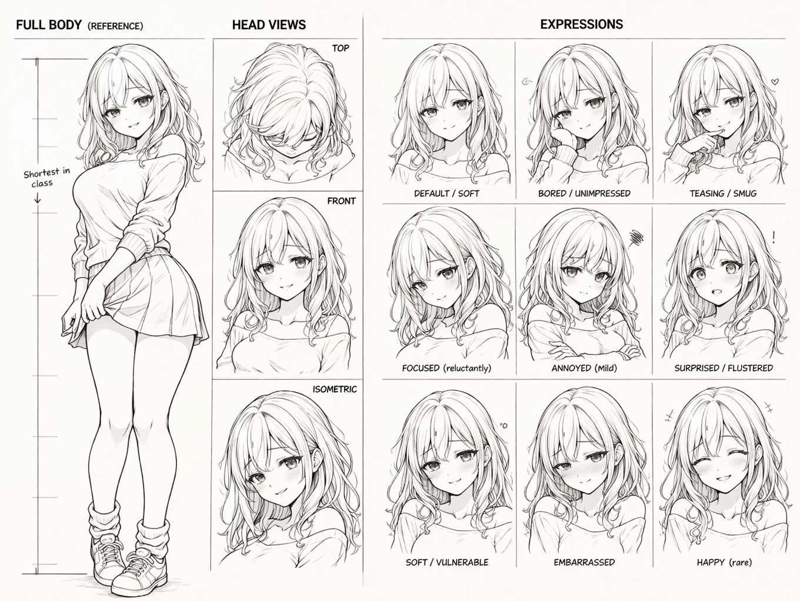
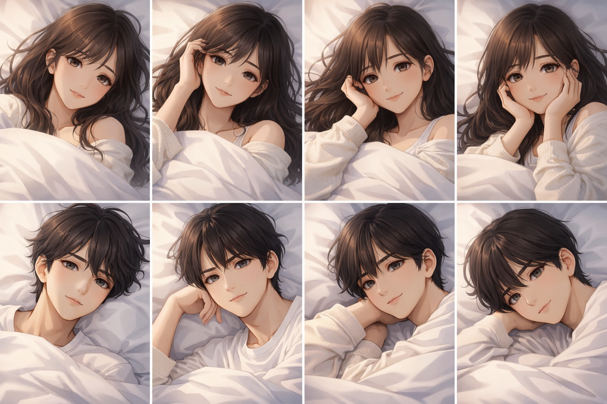
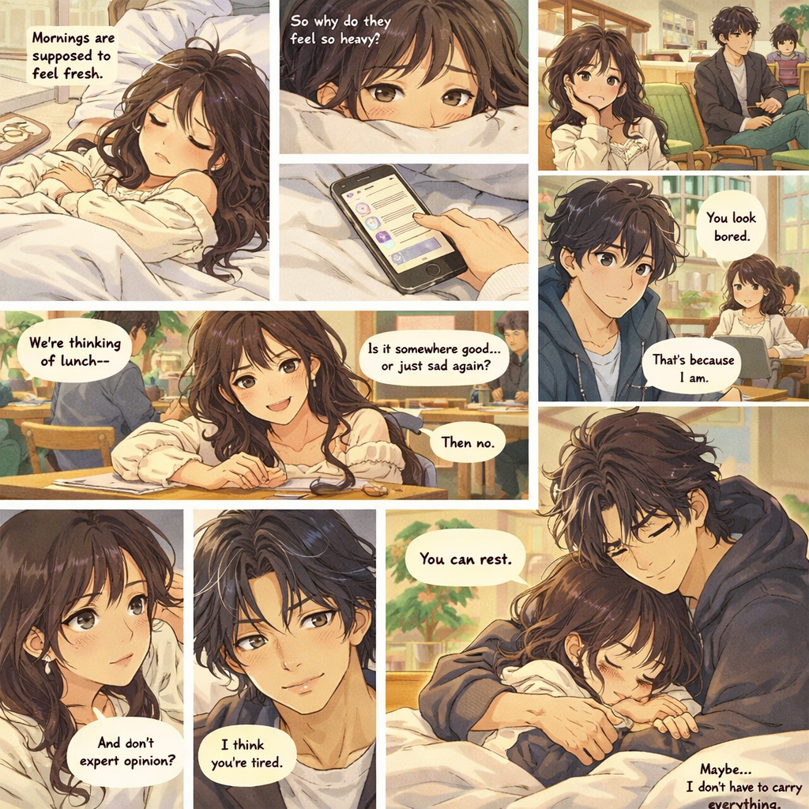
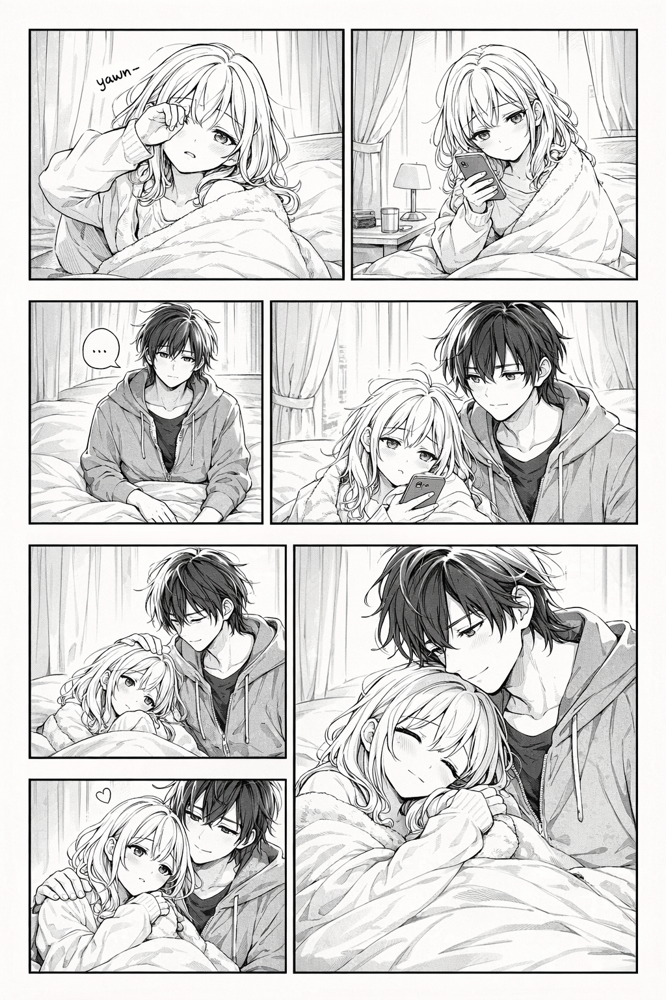
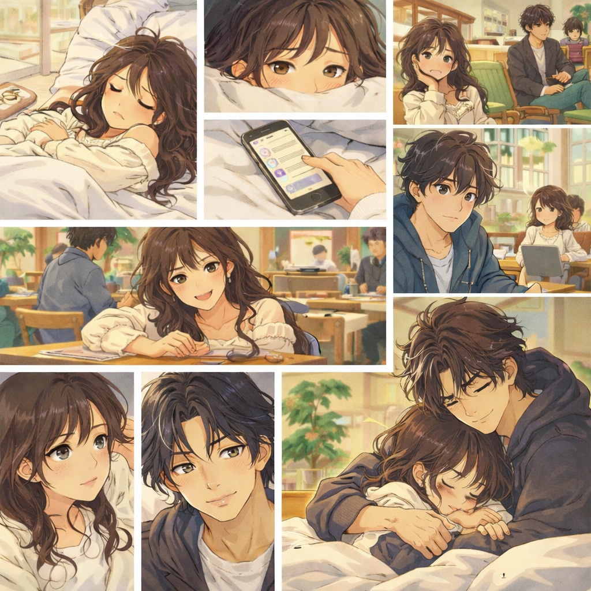

REN & AIKO
A Story of Distance & Devotion
VOLUME 1 — FIRST EDITION
Official Release Date
--
Days
--
Hours
--
Min
--
Sec
NOW AVAILABLE — VOLUME 1
Synopsis
Separated by oceans and time zones, Ren counts the days until he can hold Aiko again. Through late-night messages and shared silences, their love stretches across the distance — bending but never breaking. Now, after years apart, the final chapter is about to begin…
Characters

AIKO LIN
Female Lead
Shortest in class, biggest in heart. Her expressions range from soft vulnerability to teasing smugness — but her smile is what Ren carries with him across every mile.

REN
Male Lead
The one who waits. Patient and steady, Ren holds onto the promise that distance is temporary — but love is not.
Chapter 1 Preview


